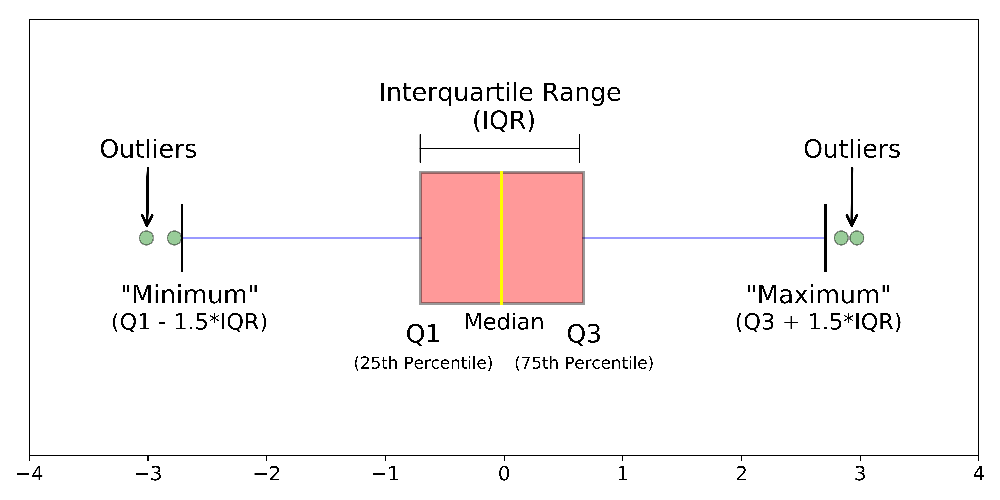
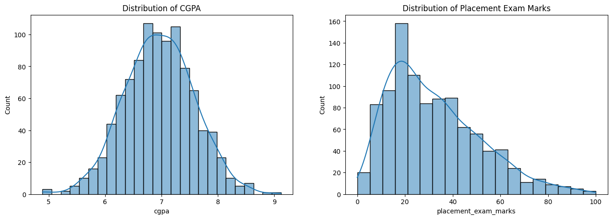
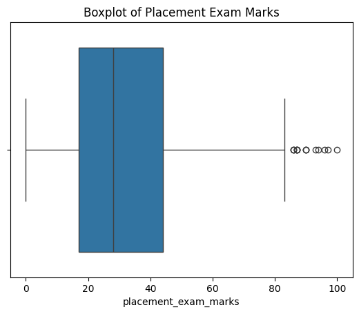
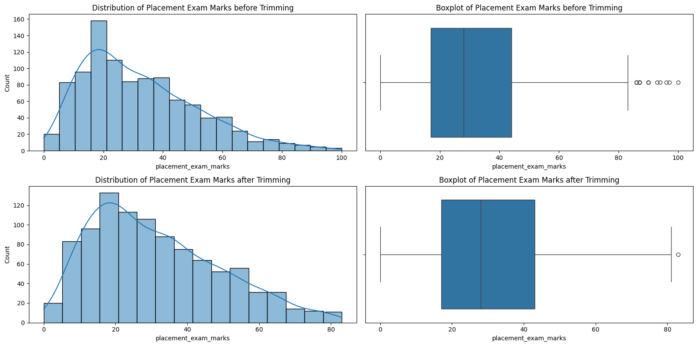
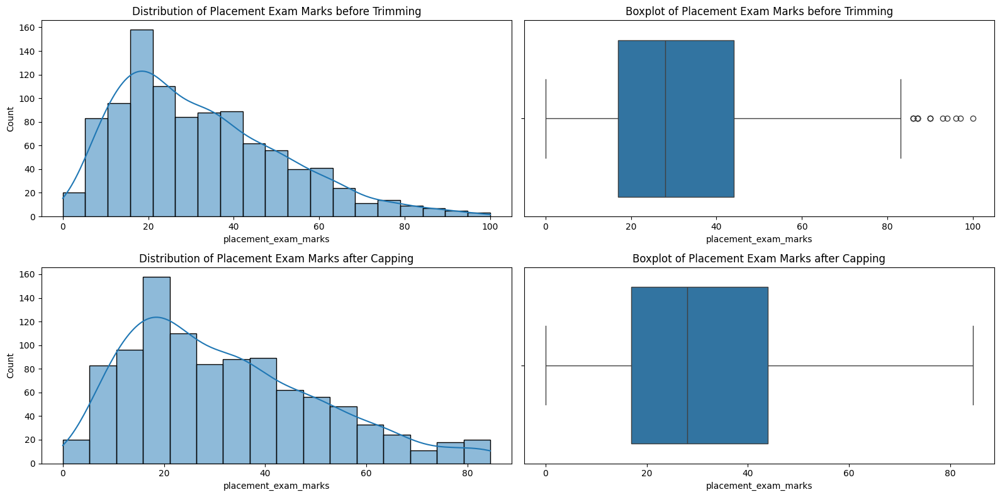

import numpy as np
import pandas as pd
import matplotlib.pyplot as plt
import seaborn as snsOutlier Detection and Removal
Discover methods to identify and handle anomalous data points using the Interquartile Range (IQR) method, comparing trimming and capping strategies to prepare cleaner datasets for machine learning.
Interquartile Range (IQR) Technique
The Interquartile Range (IQR) is a measure of statistical dispersion and is a widely used method for detecting outliers in a dataset. It represents the range between the first quartile (25th percentile, \(Q_1\)) and the third quartile (75th percentile, \(Q_3\)):
\[\text{IQR} = Q_3 - Q_1\]
Identifying Outliers:
Data points are considered outliers if they fall outside the bounds:
* Lower Bound: \(Q_1 - 1.5 \times \text{IQR}\)
* Upper Bound: \(Q_3 + 1.5 \times \text{IQR}\)
Here is an image that shows the IQR method.

If there are any data points that fall outside these bounds, they are typically considered outliers. We can handle outliers in two ways:
1. Trimming
2. Capping
Trimming vs. Capping (Winsorization)
When handling outliers, two common approaches are Trimming and Capping:
1. Trimming (Truncation)
Trimming involves completely removing the outlier data points from the dataset.
- Benefits:
- Simple and straightforward to implement.
- Fully eliminates the influence of extreme values on models.
- Limitations/Problems of Trimming:
- Loss of Information: If a row contains an outlier in one feature but valuable, normal information in all other features, trimming discards all of that valid information.
- Reduced Data Size: In smaller datasets, removing rows can significantly reduce the amount of training data, potentially leading to overfitting or loss of statistical power.
- Bias Induction: If outliers are not randomly distributed, deleting them can introduce systematic bias into the dataset.
- When to use: Use when you have a large dataset and the outliers represent genuine errors or data corruption that does not carry useful information.
2. Capping (Winsorization)
Capping limits the extreme values by replacing outliers with the nearest non-outlier values (the threshold boundaries, e.g., the Lower and Upper bounds). That means, if a data point is below the lower bound, it is set to the lower bound value; if it is above the upper bound, it is set to the upper bound value.
- Benefits:
- Preserves the sample size (no data points are deleted).
- Prevents loss of potentially valuable information contained in other features of the outlier rows.
- When to use: Use capping when your dataset is relatively small. If we have a large dataset, we should prefer trimming over capping.
Now we will see them in code.
Now we will load the dataset. You can download the dataset from here.
df = pd.read_csv('placement.csv')
df.head()| cgpa | placement_exam_marks | placed | |
|---|---|---|---|
| 0 | 7.19 | 26.0 | 1 |
| 1 | 7.46 | 38.0 | 1 |
| 2 | 7.54 | 40.0 | 1 |
| 3 | 6.42 | 8.0 | 1 |
| 4 | 7.23 | 17.0 | 0 |
Here placed is a target column. At first, we will see the distribution of the cgpa and placement_exam_marks columns.
plt.figure(figsize=(16, 5))
plt.subplot(121)
sns.histplot(df['cgpa'], kde=True)
plt.title('Distribution of CGPA')
plt.subplot(122)
sns.histplot(df['placement_exam_marks'], kde=True)
plt.title('Distribution of Placement Exam Marks')
plt.show()
Let’s see the statistical summary of the dataset.
df['placement_exam_marks'].describe()count 1000.000000
mean 32.225000
std 19.130822
min 0.000000
25% 17.000000
50% 28.000000
75% 44.000000
max 100.000000
Name: placement_exam_marks, dtype: float64Insights:
Look at the max value of the placement_exam_marks column. It is 100, which is too much higher than the 75% value (which is 44). This indicates that there are some outliers in the placement_exam_marks column. Let’s see them in a boxplot.
sns.boxplot(x=df['placement_exam_marks'])
plt.title('Boxplot of Placement Exam Marks')
plt.show()
We can see the outliers in the boxplot. Now we will handle them using the IQR method.
Q1, Q3 = np.percentile(df['placement_exam_marks'], [25, 75])
Q1, Q3(np.float64(17.0), np.float64(44.0))IQR = Q3 - Q1
lower_bound = Q1 - 1.5 * IQR
upper_bound = Q3 + 1.5 * IQR
lower_bound, upper_bound(np.float64(-23.5), np.float64(84.5))Let’s find the outliers. We will create a function to find the outliers using the IQR method.
def detect_outliers_iqr(data, column):
"""
Generalized function to calculate IQR, lower & upper bounds,
and find outliers in a specified column of a DataFrame.
"""
# Calculate Q1 (25th percentile) and Q3 (75th percentile)
q1 = data[column].quantile(0.25)
q3 = data[column].quantile(0.75)
# Calculate Interquartile Range (IQR)
iqr = q3 - q1
# Define bounds
lower_limit = q1 - 1.5 * iqr
upper_limit = q3 + 1.5 * iqr
# Identify outliers
outliers = data[(data[column] < lower_limit) | (data[column] > upper_limit)]
print(f"--- Outlier Detection Analysis for '{column}' ---")
print(f"Q1 (25th percentile): {q1:.4f}")
print(f"Q3 (75th percentile): {q3:.4f}")
print(f"IQR: {iqr:.4f}")
print(f"Lower Limit (Bound): {lower_limit:.4f}")
print(f"Upper Limit (Bound): {upper_limit:.4f}")
print(f"Number of Outliers: {len(outliers)}\n")
return lower_limit, upper_limit, outliersThese are the outliers. Now we will either trim or cap them.
Trimming
Here is a generic function to trim the outliers.
def generate_clean_dataset(data, column, lower_limit, upper_limit):
"""
Generalized function to return a trimmed (outlier-free) dataset
by removing values outside the specified lower and upper bounds.
"""
clean_data = data[(data[column] >= lower_limit) & (data[column] <= upper_limit)]
print(f"--- Dataset Trimming Report ---")
print(f"Original shape: {data.shape}")
print(f"Cleaned shape: {clean_data.shape}")
print(f"Removed {len(data) - len(clean_data)} outliers.")
return clean_datalower_bound, upper_bound, outliers_df = detect_outliers_iqr(df, 'placement_exam_marks')
outliers_df--- Outlier Detection Analysis for 'placement_exam_marks' ---
Q1 (25th percentile): 17.0000
Q3 (75th percentile): 44.0000
IQR: 27.0000
Lower Limit (Bound): -23.5000
Upper Limit (Bound): 84.5000
Number of Outliers: 15
| cgpa | placement_exam_marks | placed | |
|---|---|---|---|
| 9 | 7.75 | 94.0 | 1 |
| 40 | 6.60 | 86.0 | 1 |
| 61 | 7.51 | 86.0 | 0 |
| 134 | 6.33 | 93.0 | 0 |
| 162 | 7.80 | 90.0 | 0 |
| 283 | 7.09 | 87.0 | 0 |
| 290 | 8.38 | 87.0 | 0 |
| 311 | 6.97 | 87.0 | 1 |
| 324 | 6.64 | 90.0 | 0 |
| 630 | 6.56 | 96.0 | 1 |
| 685 | 6.05 | 87.0 | 1 |
| 730 | 6.14 | 90.0 | 1 |
| 771 | 7.31 | 86.0 | 1 |
| 846 | 6.99 | 97.0 | 0 |
| 917 | 5.95 | 100.0 | 0 |
df_clean = generate_clean_dataset(df, 'placement_exam_marks', lower_bound, upper_bound)--- Dataset Trimming Report ---
Original shape: (1000, 3)
Cleaned shape: (985, 3)
Removed 15 outliers.Now let’s see them in graphs.
plt.figure(figsize=(16, 8))
plt.subplot(221)
sns.histplot(df['placement_exam_marks'], kde=True)
plt.title('Distribution of Placement Exam Marks before Trimming')
plt.subplot(222)
sns.boxplot(x=df['placement_exam_marks'])
plt.title('Boxplot of Placement Exam Marks before Trimming')
plt.subplot(223)
sns.histplot(df_clean['placement_exam_marks'], kde=True)
plt.title('Distribution of Placement Exam Marks after Trimming')
plt.subplot(224)
sns.boxplot(x=df_clean['placement_exam_marks'])
plt.title('Boxplot of Placement Exam Marks after Trimming')
plt.tight_layout()
plt.show()
The kde plot is still right-skewed. If we want to make it normally distributed, we need log transformation. But this not today’s topic.
Capping (Winsorization)
def cap_outliers_iqr(data, column, lower_limit, upper_limit):
"""
Generalized function to cap outliers in a specified column of a DataFrame.
Replaces values below lower_limit with lower_limit and values above upper_limit with upper_limit.
"""
capped_data = data.copy()
# Cap the values using clip
capped_data[column] = capped_data[column].clip(lower=lower_limit, upper=upper_limit)
print(f"--- Dataset Capping (Winsorization) Report for '{column}' ---")
print(f"Original Min: {data[column].min():.4f} | Capped Min: {capped_data[column].min():.4f}")
print(f"Original Max: {data[column].max():.4f} | Capped Max: {capped_data[column].max():.4f}")
print(f"Number of values capped: {len(data[ (data[column] < lower_limit) | (data[column] > upper_limit) ])}")
return capped_datadf_capped = cap_outliers_iqr(df, 'placement_exam_marks', lower_bound, upper_bound)--- Dataset Capping (Winsorization) Report for 'placement_exam_marks' ---
Original Min: 0.0000 | Capped Min: 0.0000
Original Max: 100.0000 | Capped Max: 84.5000
Number of values capped: 15df.shape, df_capped.shape((1000, 3), (1000, 3))Look at the shapes of the original and capped datasets. It is the same. Now let’s see them in graphs.
plt.figure(figsize=(16, 8))
plt.subplot(221)
sns.histplot(df['placement_exam_marks'], kde=True)
plt.title('Distribution of Placement Exam Marks before Trimming')
plt.subplot(222)
sns.boxplot(x=df['placement_exam_marks'])
plt.title('Boxplot of Placement Exam Marks before Trimming')
plt.subplot(223)
sns.histplot(df_capped['placement_exam_marks'], kde=True)
plt.title('Distribution of Placement Exam Marks after Capping')
plt.subplot(224)
sns.boxplot(x=df_capped['placement_exam_marks'])
plt.title('Boxplot of Placement Exam Marks after Capping')
plt.tight_layout()
plt.show()